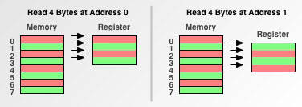
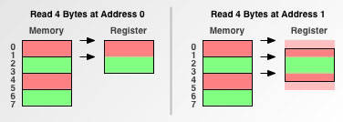
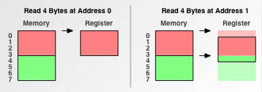
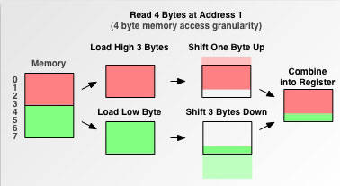
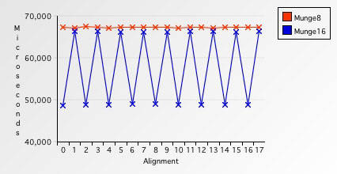
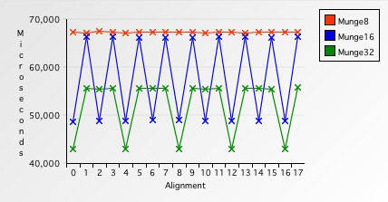
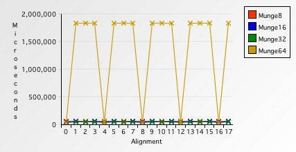
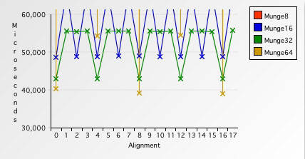
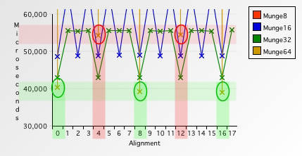

developer.ibm Data alignment: Straighten up and fly right
NOTE: 本文给出了memory access详细细节以及相关问题。其中的*memory access granularity*概念尤其重要，结合前面章节的内容，在此可以预告读者目前大多数CPU的*memory access granularity*取word size。
Memory access granularity
Programmers are conditioned to think of memory as a simple array of bytes. Among C and its descendants, char* is ubiquitous(普遍存在的) as meaning “a block of memory”, and even Java™ has its byte[] type to represent raw memory.
Figure 1. How programmers see memory
However, your computer’s processor does not read from and write to memory in byte-sized chunks. Instead, it accesses memory in two-, four-, eight- 16- or even 32-byte chunks. We’ll call the size in which a processor accesses memory its memory access granularity.
NOTE: 需要理解granularity的含义，它的中文意思是**粒度**，可以把它看做是**单位**的意思，它具有**原子性**(不可分的)。memory access granularity**是CPU从memory中读取数据的**单位，所以CPU无法从memory中读取半个单位的数据，只能够读取一个单位的数据。下面的Figure 2就非常直观地展示了CPU视角的memory。通过前面的这些分析，我们应该知道的是，CPU只能够从位置
0、4、8等位置开始读取数据，这些位置我们通常将它们称为memory access boundary（在后续章节会介绍），显然CPU access boundary是**memory access granularity**的整数倍，如果一个数据的存储位置是memory access boundary，则称为**align to memory access granularity**（对齐），使用aligned来形容这样的地址，否则就是unaligned。通过后面的章节，我们会看到，aligned address相比于unaligned address有着诸多优势。
Figure 2. How processors see memory
If you don’t understand and address alignment issues in your software, the following scenarios, in increasing order of severity, are all possible:
- Your software will run slower.
- Your application will lock up.
- Your operating system will crash.
- Your software will silently fail, yielding incorrect results.
Alignment fundamentals
To illustrate the principles behind alignment, examine a constant task, and how it’s affected by a processor’s memory access granularity. The task is simple: first read four bytes from address 0 into the processor’s register. Then read four bytes from address 1 into the same register.
Single-byte memory access granularity
First examine what would happen on a processor with a one-byte memory access granularity:
Figure 3. Single-byte memory access granularity

This fits in with the naive programmer’s model of how memory works: it takes the same four memory accesses to read from address 0 as it does from address 1. Now see what would happen on a processor with two-byte granularity, like the original 68000:
Double-byte memory access granularity
Figure 4. Double-byte memory access granularity

When reading from address 0, a processor with two-byte granularity takes half the number of memory accesses as a processor with one-byte granularity. Because each memory access entails a fixed amount overhead, minimizing the number of accesses can really help performance.
NOTE: 这句话的意思是a processor with two-byte granularity读取4个字节花费的时间比a processor with one-byte granularity花费的时间要少一半；
However, notice what happens when reading from address 1. Because the address doesn’t fall evenly on the processor’s memory access boundary, the processor has extra work to do. Such an address is known as an unaligned address. Because address 1 is unaligned, a processor with two-byte granularity must perform an extra memory access, slowing down the operation
Finally, examine what would happen on a processor with four-byte memory access granularity, like the 68030 or PowerPC® 601:
Quad-byte memory access granularity
Figure 5. Quad-byte memory access granularity

A processor with four-byte granularity can slurp(大口吃) up four bytes from an aligned address with one read. Also note that reading from an unaligned address doubles the access count.
Now that you understand the fundamentals behind aligned data access, you can explore some of the issues related to alignment.
Lazy processors
A processor has to perform some tricks when instructed to access an unaligned address. Going back to the example of reading four bytes from address 1 on a processor with four-byte granularity, you can work out exactly what needs to be done:
Figure 6. How processors handle unaligned memory access

The processor needs to read the first chunk of the unaligned address and shift out the “unwanted” bytes from the first chunk. Then it needs to read the second chunk of the unaligned address and shift out some of its information. Finally, the two are merged together for placement in the register. It’s a lot of work.
Some processors just aren’t willing to do all of that work for you.
The original 68000 was a processor with two-byte granularity and lacked the circuitry to cope with unaligned addresses. When presented with such an address, the processor would throw an exception. The original Mac OS didn’t take very kindly to this exception, and would usually demand the user restart the machine. Ouch.
Later processors in the 680×0 series, such as the 68020, lifted this restriction and performed the necessary work for you. This explains why some old software that works on the 68020 crashes on the 68000. It also explains why, way back when, some old Mac coders initialized pointers with odd addresses. On the original Mac, if the pointer was accessed without being reassigned to a valid address, the Mac would immediately drop into the debugger. Often they could then examine the calling chain stack and figure out where the mistake was.
All processors have a finite number of transistors to get work done. Adding unaligned address access support cuts into this “transistor budget.” These transistors could otherwise be used to make other portions of the processor work faster, or add new functionality altogether.
An example of a processor that sacrifices unaligned address access support in the name of speed is MIPS. MIPS is a great example of a processor that does away with almost all frivolity in the name of getting real work done faster.
The PowerPC takes a hybrid approach. Every PowerPC processor to date has hardware support for unaligned 32-bit integer access. While you still pay a performance penalty for unaligned access, it tends to be small.
On the other hand, modern PowerPC processors lack hardware support for unaligned 64-bit floating-point access. When asked to load an unaligned floating-point number from memory, modern PowerPC processors will throw an exception and have the operating system perform the alignment chores in software. Performing alignment in software is much slower than performing it in hardware.
NOTE : 有的processor压根就不支持unaligned address access
Speed
Writing some tests illustrates the performance penalties of unaligned memory access. The test is simple: you read, negate, and write back the numbers in a ten-megabyte buffer. These tests have two variables:
1、The size, in bytes, in which you process the buffer. First you’ll process the buffer one byte at a time. Then you’ll move onto two-, four- and eight-bytes at a time.
2、The alignment of the buffer. You’ll stagger the alignment of the buffer by incrementing the pointer to the buffer and running each test again.
These tests were performed on a 800 MHz PowerBook G4. To help normalize performance fluctuations from interrupt processing, each test was run ten times, keeping the average of the runs. First up is the test that operates on a single byte at a time:
Listing 1. Munging data one byte at a time
void Munge8( void ∗data, uint32_t size ) {
uint8_t ∗data8 = (uint8_t∗) data;
uint8_t ∗data8End = data8 + size;
while( data8 != data8End ) {
∗data8++ = ‑∗data8;
}
}
It took an average of 67,364 microseconds to execute this function. Now modify it to work on two bytes at a time instead of one byte at a time — which will halve the number of memory accesses:
Listing 2. Munging data two bytes at a time
void Munge16( void ∗data, uint32_t size ) {
uint16_t ∗data16 = (uint16_t∗) data;
uint16_t ∗data16End = data16 + (size >> 1); /∗ Divide size by 2. ∗/
uint8_t ∗data8 = (uint8_t∗) data16End;
uint8_t ∗data8End = data8 + (size & 0x00000001); /∗ Strip upper 31 bits. ∗/
while( data16 != data16End ) {
∗data16++ = ‑∗data16;
}
while( data8 != data8End ) {
∗data8++ = ‑∗data8;
}
}
This function took 48,765 microseconds to process the same ten-megabyte buffer — 38% faster than Munge8. However, that buffer was aligned. If the buffer is unaligned, the time required increases to 66,385 microseconds — about a 27% speed penalty. The following chart illustrates the performance pattern of aligned memory accesses versus unaligned accesses:
Figure 7. Single-byte access versus double-byte access

The first thing you notice is that accessing memory one byte at a time is uniformly slow. The second item of interest is that when accessing memory two bytes at a time, whenever the address is not evenly divisible by two, that 27% speed penalty rears its ugly head.
Now up the ante, and process the buffer four bytes at a time:
Listing 3. Munging data four bytes at a time
void Munge32( void ∗data, uint32_t size ) {
uint32_t ∗data32 = (uint32_t∗) data;
uint32_t ∗data32End = data32 + (size >> 2); /∗ Divide size by 4. ∗/
uint8_t ∗data8 = (uint8_t∗) data32End;
uint8_t ∗data8End = data8 + (size & 0x00000003); /∗ Strip upper 30 bits. ∗/
while( data32 != data32End ) {
∗data32++ = ‑∗data32;
}
while( data8 != data8End ) {
∗data8++ = ‑∗data8;
}
}
This function processes an aligned buffer in 43,043 microseconds and an unaligned buffer in 55,775 microseconds, respectively. Thus, on this test machine, accessing unaligned memory four bytes at a time is slower than accessing aligned memory two bytes at a time:
Figure 8. Single- versus double- versus quad-byte access

Now for the horror story: processing the buffer eight bytes at a time.
Listing 4. Munging data eight bytes at a time
void Munge64( void ∗data, uint32_t size ) {
double ∗data64 = (double∗) data;
double ∗data64End = data64 + (size >> 3); /∗ Divide size by 8. ∗/
uint8_t ∗data8 = (uint8_t∗) data64End;
uint8_t ∗data8End = data8 + (size & 0x00000007); /∗ Strip upper 29 bits. ∗/
while( data64 != data64End ) {
∗data64++ = ‑∗data64;
}
while( data8 != data8End ) {
∗data8++ = ‑∗data8;
}
}
Munge64 processes an aligned buffer in 39,085 microseconds — about 10% faster than processing the buffer four bytes at a time. However, processing an unaligned buffer takes an amazing 1,841,155 microseconds — two orders of magnitude slower than aligned access, an outstanding 4,610% performance penalty!
What happened? Because modern PowerPC processors lack hardware support for unaligned floating-point access, the processor throws an exception for each unaligned access. The operating system catches this exception and performs the alignment in software. Here’s a chart illustrating the penalty, and when it occurs:
Figure 9. Multiple-byte access comparison

The penalties for one-, two- and four-byte unaligned access are dwarfed by the horrendous unaligned eight-byte penalty. Maybe this chart, removing the top (and thus the tremendous gulf between the two numbers), will be clearer:
Figure 10. Multiple-byte access comparison #2

There’s another subtle insight hidden in this data. Compare eight-byte access speeds on four-byte boundaries:
Figure 11. Multiple-byte access comparison #3

Notice accessing memory eight bytes at a time on four- and twelve- byte boundaries is slower than reading the same memory four or even two bytes at a time. While PowerPCs have hardware support for four-byte aligned eight-byte doubles, you still pay a performance penalty if you use that support. Granted, it’s no where near the 4,610% penalty, but it’s certainly noticeable. Moral of the story: accessing memory in large chunks can be slower than accessing memory in small chunks, if that access is not aligned.
Atomicity
All modern processors offer atomic instructions. These special instructions are crucial for synchronizing two or more concurrent tasks. As the name implies, atomic instructions must be indivisible — that’s why they’re so handy for synchronization: they can’t be preempted.
It turns out that in order for atomic instructions to perform correctly, the addresses you pass them must be at least four-byte aligned. This is because of a subtle interaction between atomic instructions and virtual memory.
If an address is unaligned, it requires at least two memory accesses. But what happens if the desired data spans two pages of virtual memory? This could lead to a situation where the first page is resident while the last page is not. Upon access, in the middle of the instruction, a page fault would be generated, executing the virtual memory management swap-in code, destroying the atomicity of the instruction. To keep things simple and correct, both the 68K and PowerPC require that atomically manipulated addresses always be at least four-byte aligned.
Unfortunately, the PowerPC does not throw an exception when atomically storing to an unaligned address. Instead, the store simply always fails. This is bad because most atomic functions are written to retry upon a failed store, under the assumption they were preempted. These two circumstances combine to where your program will go into an infinite loop if you attempt to atomically store to an unaligned address. Oops.
Altivec
Altivec is all about speed. Unaligned memory access slows down the processor and costs precious transistors. Thus, the Altivec engineers took a page from the MIPS playbook and simply don’t support unaligned memory access. Because Altivec works with sixteen-byte chunks at a time, all addresses passed to Altivec must be sixteen-byte aligned. What’s scary is what happens if your address is not aligned.
Altivec won’t throw an exception to warn you about the unaligned address. Instead, Altivec simply ignores the lower four bits of the address and charges ahead, operating on the wrong address. This means your program may silently corrupt memory or return incorrect results if you don’t explicitly make sure all your data is aligned.
There is an advantage to Altivec’s bit-stripping ways. Because you don’t need to explicitly truncate (align-down) an address, this behavior can save you an instruction or two when handing addresses to the processor.
This is not to say Altivec can’t process unaligned memory. You can find detailed instructions how to do so on the Altivec Programming Environments Manual (see resources on the right). It requires more work, but because memory is so slow compared to the processor, the overhead for such shenanigans is surprisingly low.
Structure alignment
Examine the following structure:
Listing 5. An innocent structure
void Munge64( void ∗data, uint32_t size ) {
typedef struct {
char a;
long b;
char c;
} Struct;
What is the size of this structure in bytes? Many programmers will answer “6 bytes.” It makes sense: one byte for a, four bytes for b and another byte for c. 1 + 4 + 1 equals 6. Here’s how it would lay out in memory:
Table 1. Structure size in bytes
| Field Type | Field Name | Field Offset | Field Size | Field End |
|---|---|---|---|---|
char |
a |
0 | 1 | 1 |
long |
b |
1 | 4 | 5 |
char |
c |
5 | 1 | 6 |
| Total size in bytes: | 6 |
However, if you were to ask your compiler to sizeof( Struct ), chances are the answer you’d get back would be greater than six, perhaps eight or even twenty-four. There’s two reasons for this: backwards compatibility and efficiency.
First, backwards compatibility. Remember the 68000 was a processor with two-byte memory access granularity, and would throw an exception upon encountering an odd address. If you were to read from or write to field b, you’d attempt to access an odd address. If a debugger weren’t installed, the old Mac OS would throw up a System Error dialog box with one button: Restart. Yikes!
So, instead of laying out your fields just the way you wrote them, the compiler padded the structure so that b and c would reside at even addresses:
Table 2. Structure with compiler padding
| Field Type | Field Name | Field Offset | Field Size | Field End |
|---|---|---|---|---|
char |
a |
0 | 1 | 1 |
| padding | 1 | 1 | 2 | |
long |
b |
2 | 4 | 6 |
char |
c |
6 | 1 | 7 |
| padding | 7 | 1 | 8 | |
| Total Size in Bytes: | 8 |
Padding is the act of adding otherwise unused space to a structure to make fields line up in a desired way. Now, when the 68020 came out with built-in hardware support for unaligned memory access, this padding was unnecessary. However, it didn’t hurt anything, and it even helped a little in performance.
The second reason is efficiency. Nowadays, on PowerPC machines, two-byte alignment is nice, but four-byte or eight-byte is better. You probably don’t care anymore that the original 68000 choked on unaligned structures, but you probably care about potential 4,610% performance penalties, which can happen if a double field doesn’t sit aligned in a structure of your devising.
Conclusion
If you don’t understand and explicitly code for data alignment:
- Your software may hit performance-killing unaligned memory access exceptions, which invoke very expensive alignment exception handlers.
- Your application may attempt to atomically store to an unaligned address, causing your application to lock up.
- Your application may attempt to pass an unaligned address to Altivec, resulting in Altivec reading from and/or writing to the wrong part of memory, silently corrupting data or yielding incorrect results.
Credits
Thanks to Alex Rosenberg and Ian Ollmann for feedback, Matt Slot for his FastTimes timing library, and Duane Hayes for providing a bevy of testing machines.